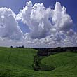

Famous for soapstone carvings, basketry and pottery The Kisii tribe (also known as the Gusii tribe) is a Bantu ethnic group who occupy the Kisii highlands in Nyanza, Western Kenya. Their home area is sandwiched between the Luo and Luhya tribes. Their highlands are also one of the most densely populated and fertile areas of Kenya. The Kisiis constitute the sixth largest ethnic group, comprising about seven percent of the national population. Kisii, which is their ethnic language, is also traditionally known as Ekegusii. Their closest tribe among the Bantus is the Meru tribe, who have an almost similar language and culture.
The Fertile Gusii Highlands
Kisii land is very fertile and often wet throughout the year, making it a rich agricultural area. As a result, the Kisii tribe is one of the most economically successful tribes of Kenya, alongside the Kikuyu tribe. Due to high altitudes and a favorable climate, the Kisii tribe has exploited their land by growing cash crops of mainly tea, coffee and pyrethrum.
The Kisii tribe also do a lot of domestic farming and supply their communities and the rest of Kenya with agricultural foodstuffs for local consumption. Traditional foods grown by the Kisii people include maize, millet, sorghum, yams, pumpkins and green vegetables. Bananas are a popular fruit in Kisii land and are often found growing along the constantly flowing riverbeds. As a result of the intensive farming that takes place on the densely populated Kiisi land, very little free land remains. Besides farming, the Kisii tribe also raises livestock on their crowded farmlands.
History of the Kisii

The ancestral Gusii population entered western Kenya from Uganda and later moved from the foothills of Mount Elgon towards their present lands. They spent two generations living at Goye Bay near Lake Victoria before moving to the Kano plains and, later, to their present location due to the expansion of the Luo and Maasai tribes. During the migration, Kisii family units became more inclusive and interdependent, forming clans. Each clan was headed by a clan leader, who was in charge of making decisions on behalf of the clan. The family head was still responsible for making the daily decisions in and around his homestead.
Culture and lifestyle of the Kisii people
Due to civilization, education and economic power, the Kisii people have undergone drastic cultural changes. Kisii was one of the few Kenyan tribes that practiced mandatory female circumcision. Although this ritual has since been outlawed, it still persists but is not as frequent as it was in the past. Kisii boys continue to be initiated into adulthood and into the Gusii as a group by circumcision.
Kisii families tend to be very large and socially cohesive, with families living close to each other and sharing daily activities such as cooking and farming. By custom, men are allowed to marry more than one wife and are considered to be the authority in their families, almost a "King" to their women.
The Gusii are known for their soapstone carvings, basketry and pottery. The soapstone or kisii is found in the Tabaka Hills of Western Kenya near the town of Kisii. A soft and easily worked stone, it comes in a variety of colors ranging from cream and lavender to black. It is then carved into various works of art, such as vases, trays, food bowls and African animals which are then polished and decorated before being sold in malls, galleries, and art and crafts shop around Kenya.
The Kisii women weave storage baskets and granaries. These are used to store potatoes and grains, as well as during tea harvesting on the farms. The Kisii stool, a seat embedded with colored beads and decorative patterns, is a symbolic craft product of the Kisii people.
Kisii religion, faith and beliefs
Today, more than 80 percent of the Kisii are Christians, with a few still practicing their traditional religion. Gusii believed in a supreme god called Engoro, whom they believed created the universe and was the source of all life. Death was considered an "unnatural" event brought on by witchcraft. Kisiis believed in medicine men and the spirits of their ancestors. Today, witchcraft is still feared in Kisii communities.
Staple food of the Kisii's
Typical Kisii foods include ugali (a meal made from sorghum and millet), matoke (cooked green bananas), green vegetables and fermented milk.